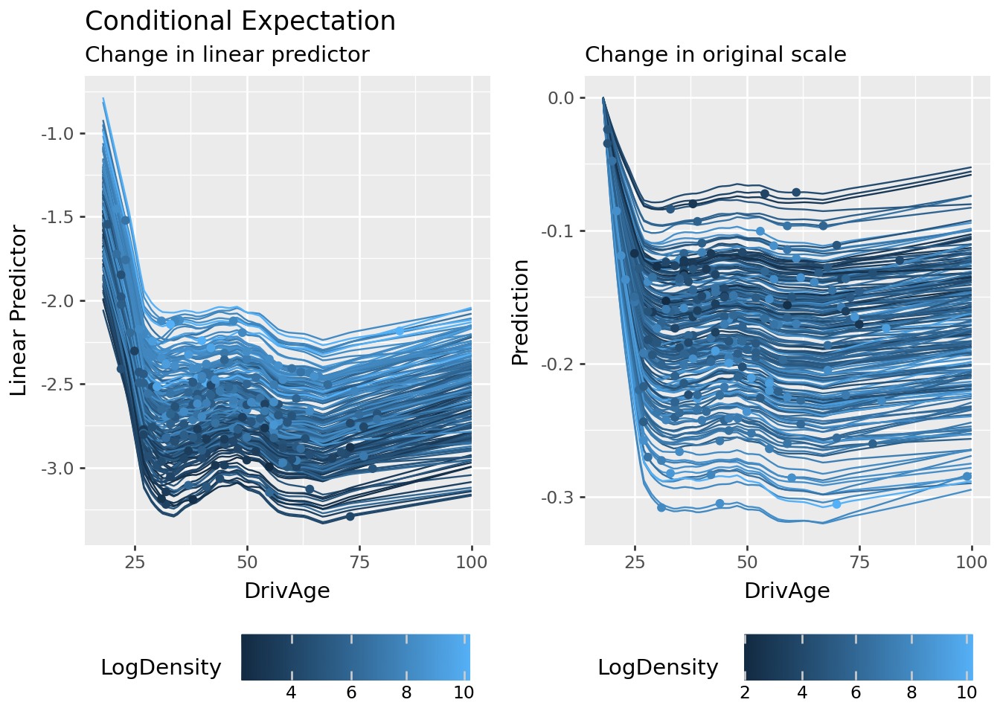

In modern actuarial science, there is an inherent tension between predictive accuracy and model transparency. While ensemble tree-based models like Gradient Boosting Machines (GBMs) frequently outperform traditional Generalized Linear Models (GLMs), their “black-box” nature presents significant hurdles for model governance, regulatory compliance, and price filing.
This notebook demonstrates a solution using Maximum Interpretation Decomposition (MID) via the {midlearn} library in Python.
Compatibility Notice
This article relies on features introduced in midlearn (>= 0.1.3) and the underlying R package midr (>= 0.5.3). Please ensure your library and package are up to date. Some arguments are not available in earlier versions.
What is MID?
MID is a functional decomposition framework that acts as a high-fidelity surrogate for complex models. It deconstructs a black-box prediction function \(f(\mathbf{X})\) into several interpretable components: intercept \(g_\emptyset\), main effects \(g_j(X_j)\), and interaction effects \(g_{jk}(X_j, X_k)\). The prediction is represented as the following additive structure:
By replicating a black-box model with this structured approach, we can quantify the “uninterpreted” variance (captured by \(g_D(\mathbf{X})\)) and derive a representation that captures the superior predictive power of machine learning without sacrificing actuarial clarity.
Setting Up
We begin by setting up the environment and loading the necessary libraries.
Code
# utilityfrom pathlib import Path# data manipulationimport numpy as npimport pandas as pdfrom sklearn.compose import ColumnTransformerfrom sklearn.preprocessing import OneHotEncoder# predictive modelingimport sklearn.linear_model as lmimport lightgbm as lgb# import loss functionfrom sklearn.metrics import mean_poisson_deviance, r2_score# surrogate modelingimport midlearn as mid# visualizationfrom plotnine import*# load training and testing datasetsPATH = Path("../data")train = pd.read_parquet(PATH /"train.parquet")test = pd.read_parquet(PATH /"test.parquet")
Error importing in API mode: ImportError('On Windows, cffi mode "ANY" is only "ABI".')
Trying to import in ABI mode.
In Python workflows, we typically partition the dataset into feature matrix \(X\), target vector \(y\), and weight vector \(w\).
We first fit a GLM to establish a transparent benchmark. Since GLMs are strictly additive on the link scale, they provide a “ground truth” structure. This allows us to verify whether the MID framework can accurately recover the original coefficients and linear effects before moving to more complex black-box models.
In a Jupyter environment, please rerun this cell to show the HTML representation or trust the notebook. On GitHub, the HTML representation is unable to render, please try loading this page with nbviewer.org.
We apply the interpret() function to the GLM. This step serves as a sanity check: if MID is effective, it should perfectly replicate the predictive behavior of the original GLM.
In a Jupyter environment, please rerun this cell to show the HTML representation or trust the notebook. On GitHub, the HTML representation is unable to render, please try loading this page with nbviewer.org.
This metric represents the proportion of the black-box model’s variance that is not captured by the additive components of the MID model. The R-squared score, \(\mathbf{R}^2(f,g) = 1 - \mathbf{U}(f,g)\), is a standard measure for this purpose. It is important to note that this \(\mathbf{R}^2\) measures the fidelity to the black-box model, not the predictive accuracy relative to the ground truth observations.
In the {midr} package, the summary output includes this ratio calculated on the training set. For models with non-linear links (e.g., Poisson regression), the “working” ratio is computed on the scale of the link function (e.g., \(\log\) scale).
To rigorously confirm the model fidelity, it is recommended to evaluate these metrics on a separate testing set. This ensures that the surrogate model is not just over-fitting the training predictions but has truly captured the underlying functional structure.
As shown by the high \(\mathbf{R}^2\) score, the MID surrogate achieves near-perfect fidelity. This level of agreement justifies using the MID components (main effects and interactions) as a reliable lens through which to interpret the original black-box model’s behavior.
Feature Effects
While the coefficients of a GLM are directly interpretable, visualizing their functional behavior across the feature space provides a more intuitive grasp of the model’s structure. In the Python ecosystem, standard libraries for GLMs often lack built-in “term plots” (common in R) to visualize partial effects on the link scale.
Here, the MID surrogate serves as a visualization tool: by appropriately replicating the PoissonRegressor, we can directly plot the main effects \(g_j(X_j)\) to verify that the linear relationships on the log scale are correctly captured.
Code
# main effects of MID surrogateplots = []for feature in X_train.columns: p = ( mid_glm.plot(feature) + lims(y=[-0.8, 0.8]) + labs(y="Main Effect") ) plots.append(p)display( (plots[0] | plots[1] | plots[2] | plots[5]) / (plots[3] | plots[4] | plots[6]))
Effect Importance
Beyond simple plots for feature effects, {midr} provides a suite of diagnostic tools. First, the Effect Importance of a term \(j\) is defined as the mean absolute contribution of that term across the population:
For interaction terms, the importance is similarly calculated using \(g_{jk}(X_j, X_k)\). This metric allows us to rank features by their average influence on the model’s predictions.
Conditional Expectation
Second, we can explore Individual Conditional Expectations (ICE). In the MID framework, the ICE for a feature \(j\) and a specific observation \(i\) is the expected value of the prediction as \(X_j\) varies, while keeping other features fixed at their observed values \(\mathbf{x}_{\setminus j}^{(i)}\):
Unlike standard black-box models, MID’s low-order structure allows us to compute these expectations efficiently and interpret the variation across curves (the “thickness” of the ICE plot) as a direct consequence of specified interaction terms \(g_{jk}\).
Additive Attribution
Third, we perform instance-level explanation through an Additive Breakdown of the prediction. For any single observation \(\mathbf{x}\), the MID surrogate’s prediction \(g(\mathbf{x})\) is decomposed into the exact sum of its functional components:
By visualizing these contributions in a waterfall plot, we can identify which specific risk factors or interaction effects drove the prediction for a particular instance, such as a high-risk policyholder.
The Black-Box: LightGBM
While GLMs are transparent, GBMs such as LightGBM often yield superior predictive power by capturing high-order interactions. However, this accuracy comes at the cost of being a black box.
Code
# data preprocessing for LightGBMdef str_to_cat(X): cats = X.select_dtypes(include=['object', 'category']).columns.tolist() X = X.copy() X[cats] = X[cats].astype('category')return X# model parameters (mirroring the R version)params_lgb = {'objective': "poisson",'n_estimators': 551,'learning_rate': 0.01672663973358928,'num_leaves': 61,'max_depth': 19,'min_child_samples': 10,'subsample': 0.8123000876841823,'colsample_bytree': 0.6507848978461632,'reg_alpha': 4.234603347091384,'reg_lambda': 8.790496879009705e-07,'random_state': 42,'n_jobs': -1,'verbosity': -1,'importance_type': 'gain'}# split datasets for validationvalid_n =int(X_train.shape[0] *0.2)train_X, valid_X = X_train.iloc[valid_n:], X_train.iloc[:valid_n]train_y, valid_y = y_train[valid_n:], y_train[:valid_n]train_w, valid_w = w_train[valid_n:], w_train[:valid_n]# initialize and train a LightGBMfit_lgb = lgb.LGBMRegressor(**params_lgb)fit_lgb.fit( X=str_to_cat(train_X), y=train_y, sample_weight=train_w, eval_set=[(valid_X, valid_y)], eval_sample_weight=[valid_w], callbacks=[lgb.early_stopping(stopping_rounds=50)])
Training until validation scores don't improve for 50 rounds
Early stopping, best iteration is:
[458] valid_0's poisson: 0.263843
In a Jupyter environment, please rerun this cell to show the HTML representation or trust the notebook. On GitHub, the HTML representation is unable to render, please try loading this page with nbviewer.org.
We use {midr} to replicate the LightGBM model. By including interaction terms in the model formula, we allow the surrogate to capture the joint relationships that the GBM has learned. The goal is to approximate the LightGBM function \(f_{LGB}(\mathbf{x})\) with our interpretable structure \(g(\mathbf{x})\):
Including all second-order interactions using the (...)^2 syntax results in \(p(p-1)/2\) interaction terms. For high-dimensional data, this can be memory-intensive. Users should ensure sufficient RAM is available or consider limiting the formula to the most relevant features, or using a subset of the training set.
In a Jupyter environment, please rerun this cell to show the HTML representation or trust the notebook. On GitHub, the HTML representation is unable to render, please try loading this page with nbviewer.org.
# main effects of MID surrogateplots = []for feature in X_train.columns: p = ( mid_lgb.plot(feature) + lims(y=[-1.0, 1.0]) + labs(y="Main Effect") ) plots.append(p)display( (plots[0] | plots[1] | plots[2] | plots[5]) / (plots[3] | plots[4] | plots[6]))
A key advantage of {midr} is its ability to isolate interaction effects \(g_{jk}\) from main effects \(g_j\). This is particularly useful to understand the joint impact of two variables (e.g., Region and LogDensity).
To rank the influence of each component discovered in the LightGBM model, we calculate the Effect Importance, defined as the average absolute contribution.
We further explore the model’s behavior using the ICE plot. In the MID framework, the variation in ICE curves for a feature \(j\) is explicitly governed by the interaction terms \(g_{jk}\) identified from the LightGBM model.
Code
ice_lgb_link = mid_lgb.conditional(type="link", variable="DrivAge", data=X_train.sample(200))ice_lgb = mid_lgb.conditional( variable="DrivAge", data=X_train.sample(200))p1 = ( ice_lgb_link.plot(theme="bluescale", var_color="LogDensity") + theme(legend_position="bottom") + labs(y="Linear Predictor", title="Conditional Expectation", subtitle="Change in linear predictor") )p2 = ( ice_lgb.plot(style="centered", theme="bluescale", var_color="LogDensity") + theme(legend_position ="bottom") + labs(y ="Prediction", title ="", subtitle ="Change in original scale") )display(p1 | p2)

Additive Attribution
Finally, we perform an Additive Breakdown for individual predictions. This provides an exact allocation of the LightGBM’s prediction into the terms of our surrogate model.
In this notebook, we have demonstrated how Maximum Interpretation Decomposition (MID) bridges the gap between predictive performance and model transparency. By using the {midlearn} library, we successfully transformed a complex LightGBM model into a structured, additive representation.
While the surrogate model fidelity may not always be perfect, the crucial advantage lies in our ability to quantify its limitations. Through the uninterpreted variation ratio, we can directly assess the complexity of the black-box model. If the fidelity is lower than expected, it serves as a diagnostic signal that the original model relies on high-order interactions or structural complexities that extend beyond second-order effects.
Knowing the extent of this “unexplained” variance is far more valuable than operating in the dark. It allows actuaries to make informed decisions about whether the additional complexity of a black-box model is justified by its performance, or if a more transparent structure is preferable for regulatory and risk management purposes.
As machine learning models become increasingly prevalent in insurance pricing and reserving, tools like MID will be essential for ensuring that our “black-boxes” remain accountable, reliable, and fundamentally understood.